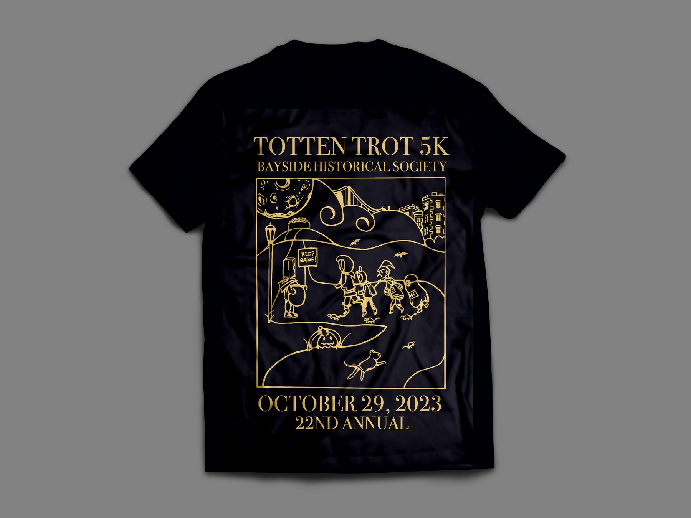

A hand-drawn race shirt for the Bayside Historical Society.

Role
Illustrator
Timeline
October 2023
Tools
Procreate Photoshop
Overview
The official shirt design for the Bayside Historical Society's 22nd annual Totten Trot 5K, held on October 29, 2023.
22ndannual race
5Kthrough the park
1hand-drawn scene
The illustration leans into the race's Halloween timing: costumed runners trot past a 5K sign under a cratered moon, with bats overhead, a jack-o'-lantern in the grass and a cat dashing along the path. Drawn entirely by hand, the scene is finished in gold on black for the shirt.
Process
Time-lapse
The scene started as a loose pencil sketch to block out the runners, the path and the skyline. Clean line art was then inked over the top, adding detail to each costume and texture to the moon and hills.
Lettering came last: the race name and Bayside Historical Society across the top, and the date and anniversary along the bottom, framing the scene like a poster.
Stages
Sketch
Blocking out the composition.
Inking
Clean line art over the sketch.
Line art
Details and lettering complete.
Colour
Gold on black for the shirt.
Final design
Gold line work on a deep charcoal ground gives the design a vintage, festive feel that reads clearly from a distance and prints cleanly as a single colour.
Reflection
How this project came about, what it was like designing for a real event, and what you'd do differently now.